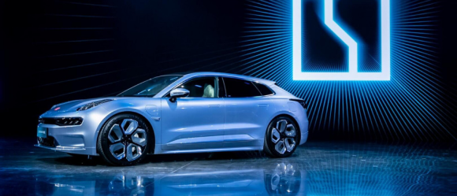

Китайские электромобили Zeekr привлекли $500 млн
22 мая 2021
Издание The Wall Street Journal сообщает, кто власти КНР планируют ввести новые правила,
которые запретят китайским
компаниям, работающим с большим объемом конфиденциальных данных пользователей, проводить IPO
в США.
Источники издания утверждают, что в соответствии с новыми правилами, получать официальное
разрешение
на IPO за рубежом от межведомственного комитета, который будет создан в ближайшие
месяцы.
| Starter | Rise | Opening | |
| Стоимость лицензии | $600 | $1 800 | $5 400 |
| Рентабельность | $1 800 | $5 400 | $16 200 |
Издание The Wall Street Journal сообщает, кто власти КНР планируют ввести новые правила, которые запретят
китайским
компаниям, работающим с большим объемом конфиденциальных данных пользователей, проводить IPO
в США.
Источники издания утверждают, что в соответствии с новыми правилами, получать официальное
разрешение
на IPO
за рубежом
от межведомственного комитета, который будет создан в ближайшие месяцы.
- Товарные инвестиции
- Московская недвижимость
- Турецкая недвижимость
- Микрофинансы
- IT разработки
- Стартапы
- Продукты здоровья
Пять инвесторов получат примерно 5,6% акций Zeekr.
Привлечение нового капитала позволит компании расти более активно, а также обеспечит ей доступ к новым технологиям в производстве аккумуляторов и к сырьевым ресурсам.
Zeekr уже принимает заказы на первую модель электромобилей и в ближайшие пять лет планирует представить рынку шесть различных моделей. Компания рассчитывает, что в 2025 году ее продажи достигнут 650 тыс. машин, сообщил президент Geely Ань Цунхунь в интервью агентству Bloomberg.
Продажи автомобилей на новых источниках энергии (NEV) в Китае в июле подскочили на 170% по сравнению с тем же периодом прошлого года — до 222 тыс., свидетельствуют данные Китайской ассоциации пассажирских автомобилей (CPCA).
Согласно прогнозу CPCA, продажи NEV в Китае в этом году увеличатся до 2,4 млн автомобилей.
К списку новостей